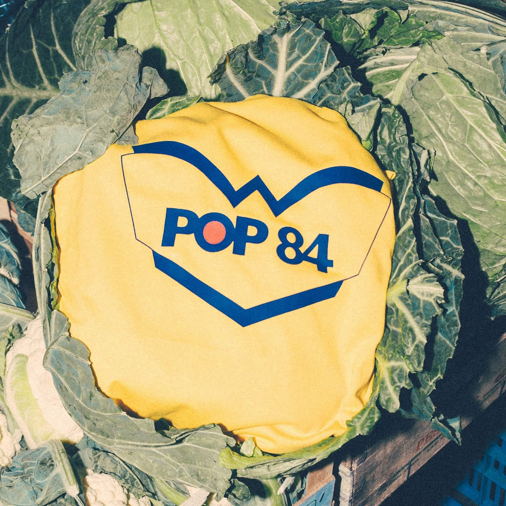
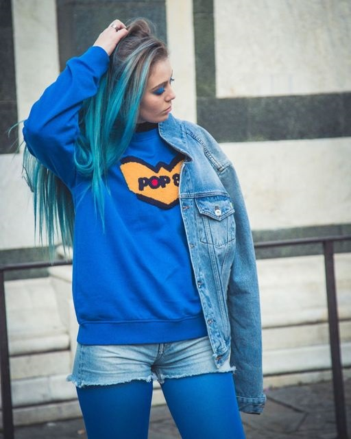

Nuestra organización ha sido un activo colaborador en un monton de problematicas que interfieren en la integridad fisica y mental de la juventud
- 2001: Nuestra POP84 inicia una exahustiva campaña contra la drogadición entre los jovenes, colaborando con varias ONG
- 2004: POP84 junto con organizaciones de lucha contra la droga lanza un festival de para recaudar dinero para la lucha contra las drogas pesadas
- 2007: POP84 abre su primer centro de recuperación de adictos
- 2010: POP84 es condecorada por la ciudad de Rimini por su labor con la juventud, principal motor turistico de dicha urbe turistica
- 2013: POP84 logra la instalaciín de 100 recintos de rehabilitación en Italia
- 2017: POP84 es reconocida con un premio por su lucha por la juventud por la Cruz Roja
- 2020: POP84 a pesar de la pandemia continuo un activa lucha contra la adición en los jovenes
- 2021: POP84 es reconocida por la UNICEF
- 2023: Actualmente POP84 Jeans continua la lucha contra las adicciones en jovenes alcanzando resultados optimos y positivos
POP84 Jeans ademas ha estado comprometido con los nuevos estandares medioambientales en esta ultima
decada, buscando la protección de los ecosistemas como el Mar Adriatico, Ligur y Mediterraneo.
También hemos luchado por la conservación forestal en este ultimo tiempo con campañas de concientizacion
e inclusive campaña para la buena alimentacion, puedes estar seguro de ello o haras llorar a nuestro
rePOPllo :(

POP84 Jeans es activo en la lucha contra la discriminación racial y fisica, por eso nuestros talles van desde s,m,l,xl,xxl e incluso xxxl y nuestros modelos de lo mas variados. Todos pueden ser POPjeaners
